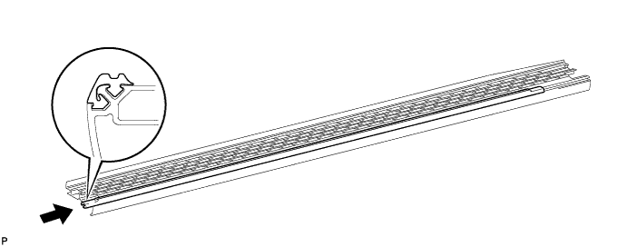
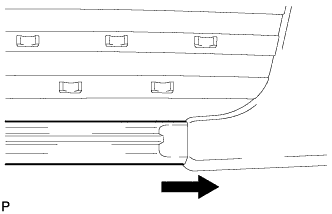
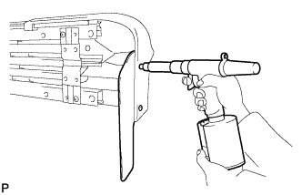
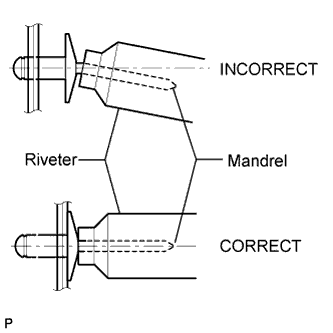
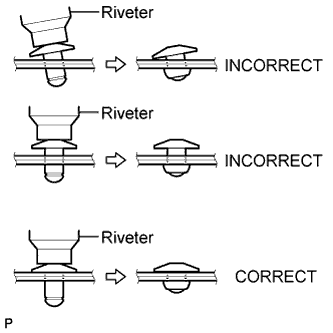
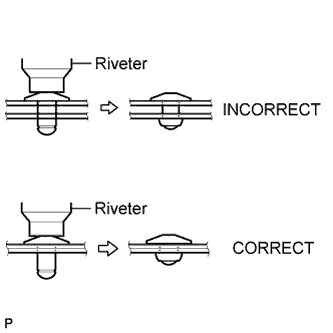

SIDE STEP > REASSEMBLY |
| 1. INSTALL REAR SIDE DOOR STEP PLATE COVER LH |
 |
Temporarily install the step plate cover with the 2 screws.
| 2. INSTALL NO. 1 SIDE DOOR STEP PLATE MOULDING |
Install the step plate moulding.

 |
Tighten the installation screws of the step plate cover.
| 3. INSTALL FRONT SIDE DOOR STEP PLATE COVER LH |
 |
Install the step plate cover with the 2 screws.
| 4. INSTALL STEP PANEL REAR LH |
Install a nose piece to an air riveter or hand riveter.
Insert the mandrel part of a new rivet into the nose piece.
 |
Using the riveter, install the rear step panel shown in the illustration.
 |
 |
 |
| 5. INSTALL NO. 3 SIDE STEP BRACKET LH |
 |
Install the side step bracket with the 2 bolts.
| 6. INSTALL NO. 2 SIDE STEP BRACKET LH |
 |
Install the side step bracket with the 2 bolts.
| 7. INSTALL NO. 1 SIDE STEP BRACKET LH |
 |
Install the side step bracket with the 2 bolts.